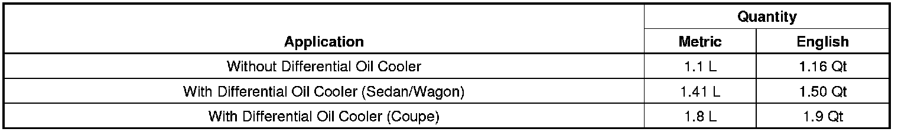
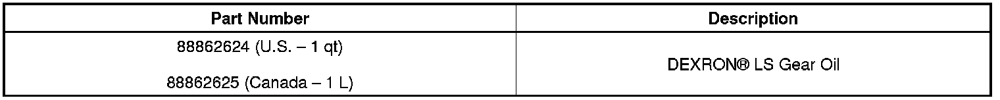
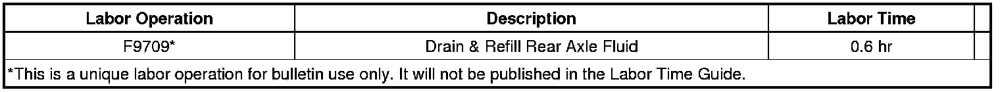

Drivetrain - Rear Axle Clunk/Chatter Type Noise on Turns
TECHNICALBulletin No.: 10-04-20-001E
Date: April 16, 2013
Subject: Rear Axle Clunk and/or Chatter Type Noise on Turns (Drain/Refill Rear Differential Fluid)
Models:
2003-2013 Cadillac CTS, Sport Wagon (Including V-Series and Export)
2004-2009 Cadillac SRX (Including Export)
2005-2010 Cadillac STS (Including V-Series and Export)
Equipped with Limited Slip Differential (RPO G80)
Supercede:
This bulletin is being revised to add the 2013 model year. Please discard Corporate Bulletin Number 10-04-20-001D (Section 04 - Driveline/Axle).
Condition
Some customers may comment on a clunk and/or chatter type noise from the rear of the vehicle while making turns.
This condition may be worse on vehicles built prior to the 2008 model year. Carbon-faced clutch plates were introduced into production in the 2008 model year and have decreased the likelihood of the clutch plate chatter.
Cause
This condition may be caused by slip/stick of the posi-traction clutch plates due to insufficient limited-slip axle additive. As plates slip and stick, a jumping or jerking feel occurs accompanied by a clunk noise.
Correction
Important
DO NOT remove the differential cover. It is not necessary to flush the old fluid from the differential.
Drain and refill the rear differential with fluid, GM P/N 88862624 (in Canada, 88862625). Refer to the Axle Lubricant Change procedure in SI.
This fluid includes a friction modifier already added with a different formulation that lasts longer and does not break down over time.

Parts Information

Warranty Information

For vehicles repaired under warranty, use the table.

Disclaimer